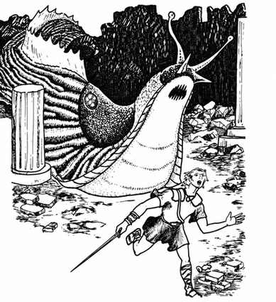
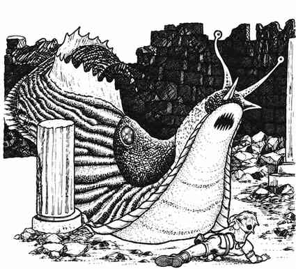

巨型蛞蝓 · Slug, Giant

 |
|
巨型蛞蝓避开光线，偏爱地城深处等场所。它们能吃掉木材等物质，也能用锉齿般的舌头钻穿坚硬土层；尽管体型庞大，却没有骨骼限制，可以挤过狭窄或低矮的开口。它们虽然能有效咬噬，但主要武器是高度腐蚀性的酸性唾液，可远距离准确喷射。
酸液通常射程 6 寸，基础命中概率 50%；每缩短 1 寸，命中率提高 10%，超过 6 寸则每增加 1 寸降低 10%。巨型蛞蝓第一次喷射总是不准确，只有 10% 的命中率；确定距离后，第二次及之后按正常概率。它们有时会被困在无法转身的狭窄通道中，此时从后方攻击很容易杀死。由于体型与构造，钝器对其无效，必须使用刃器或魔法攻击；厚实的橡胶状皮肤和强大力量使其能轻易撞开门。巨型蛞蝓呈浅灰色，腹部纯白。